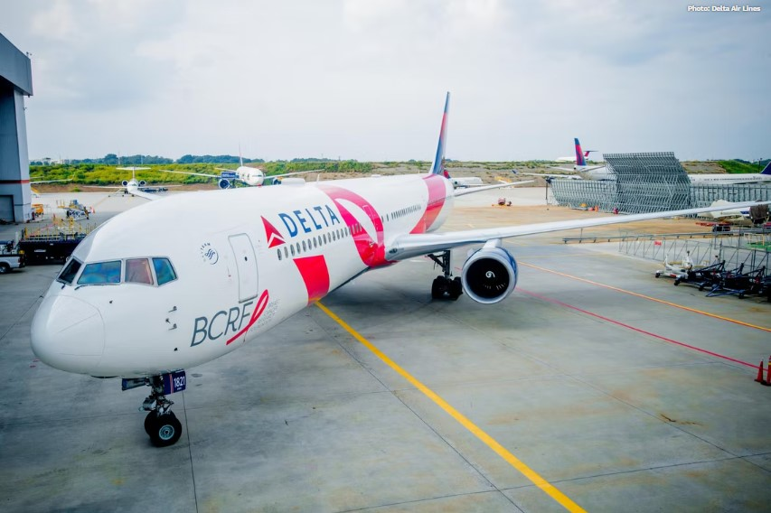

Destacados de la semana
A donde volará el 767 Rosado de Delta?
¿Dónde es más probable que vea el N845MH en sus viajes? Según los datos generados
hace una semana en el momento de escribir este artículo por RadarBox.com, el avión parece tener su base entre el
aeropuerto internacional de Atlanta Hartsfield-Jackson (ATL) y el JFK de Nueva York. De hecho, ha tenido 350
(27%) y 265 (20,5%) vuelos a estos hubs respectivamente, en los últimos 12 meses.
Mientras tanto, el destino no estadounidense más frecuentado por el avión rosa es el aeropuerto de Londres
Heathrow (LHR), que ocupa el tercer lugar con 146 vuelos en el último año (11,3% de la actividad total del
N845MH). Esto lo sitúa justo por delante del Aeropuerto Internacional de Los Ángeles (LAX), que ha visto 140
(10,8%) vuelos con el N845MH.
Después de LAX, hay un descenso significativo, siendo el siguiente aeropuerto más alto el quinto, Las Vegas
Harry Reid International (LAS), con 60 vuelos (4,6%). Completando el top 10, tenemos tres destinos
internacionales, y dos que están dentro de Estados Unidos. En orden descendente, son Madrid Barajas (40), San
Diego International (39), Niza Costa Azul (28), Buenos Aires Ezeiza (25) y Seattle Tacoma (24).
Lufthansa revela un nuevo concepto de cabina de larga distancia

Por primera vez, Lufthansa pondrá en marcha suites cerradas a bordo de sus aviones. La primera clase tendrá
paredes que llegan "casi a la altura del techo", con puertas que se cierran y que casi separan la suite del
resto de la cabina. El asiento tiene casi un metro de ancho, más del doble que la mayoría de sus asientos
económicos de largo recorrido actuales. Naturalmente, el asiento también se convierte en una cama. Curiosamente,
la suite también contiene un armario personal.
Aunque la suite es bastante privada, se ha diseñado de forma que un compañero de viaje pueda unirse a ella para
comer, con una gran mesa de comedor desplegable y un asiento frente al asiento principal. Como se puede ver en
la foto de arriba, las suites tienen una gran pantalla. Como se está convirtiendo poco a poco en la norma, serán
compatibles con los auriculares Bluetooth del propio pasajero. Lufthansa tiene previsto revelar más detalles
sobre la suite en el nuevo año.